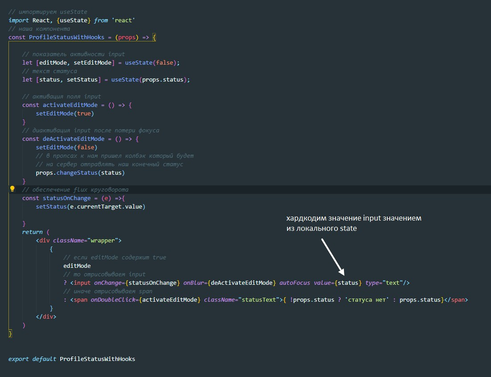

Разработчики React стремятся к использованию только функционального программированию, поэтому в скором времени классовые компоненты канут в лету, везде будут использовать только функциональные компоненты. Что есть такого в классовой компоненте, чего нет у функциональной:
Для реализации локального state используется хук useState
useState - это функция, которая принимает в себя значение начального state и возвращает массив всегда с двумя элементами:
Где же будет храниться этот state? в самом react.
У нас есть компонента, которая отрисовывает статус пользователя в нашей социальной сети. Нам необходимо обеспечить функционал что бы при двойном клике по статусу у нас тег span менялся на input
За то, что именно должно отображаться в данный момент, будет отвечать значение editMode - это булевое значение
За то, что именно должно отображатьсяв поле input, будет отвечать значение status, т.е. мы будем сосздавать два участка локального state
Перед тем как использрвать хук не забываем импортировать функцию
Так же можно обращаться к useState без импорта - вот так: React.useState()